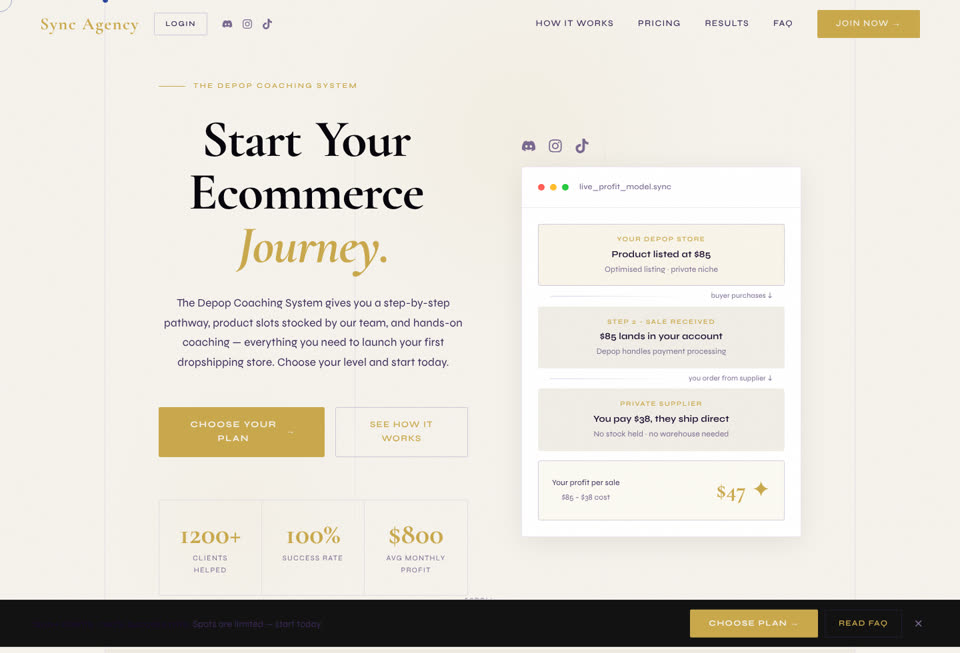
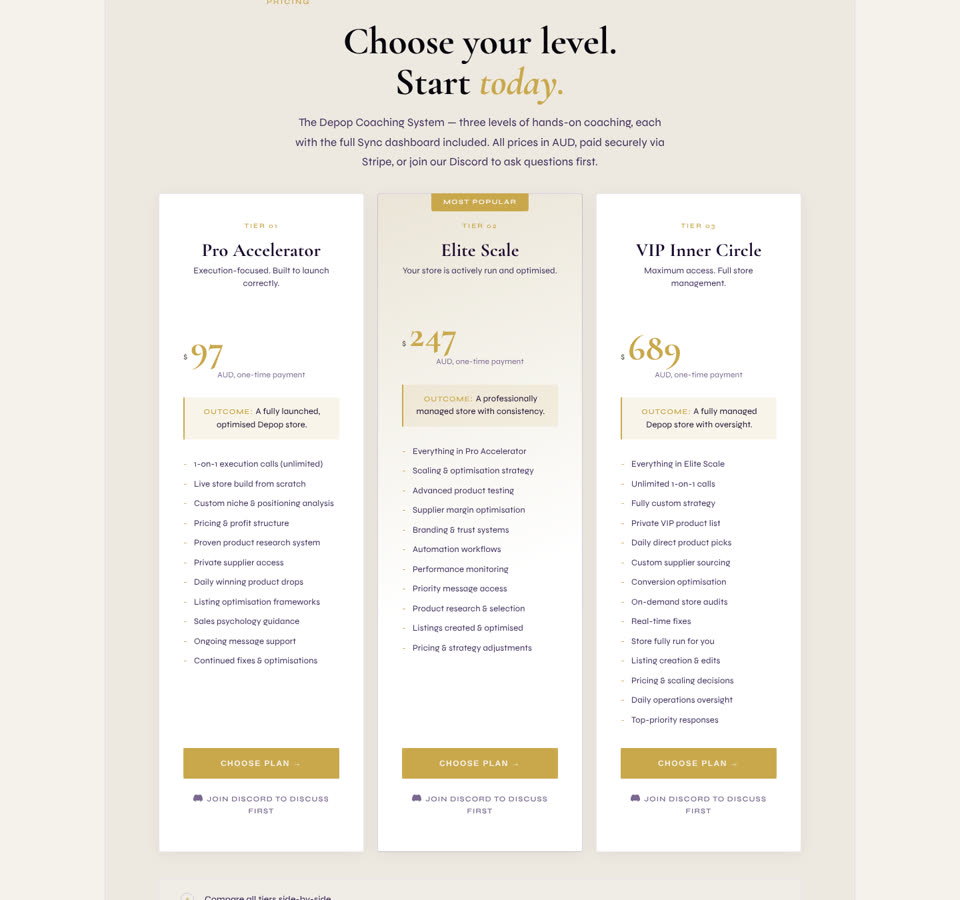
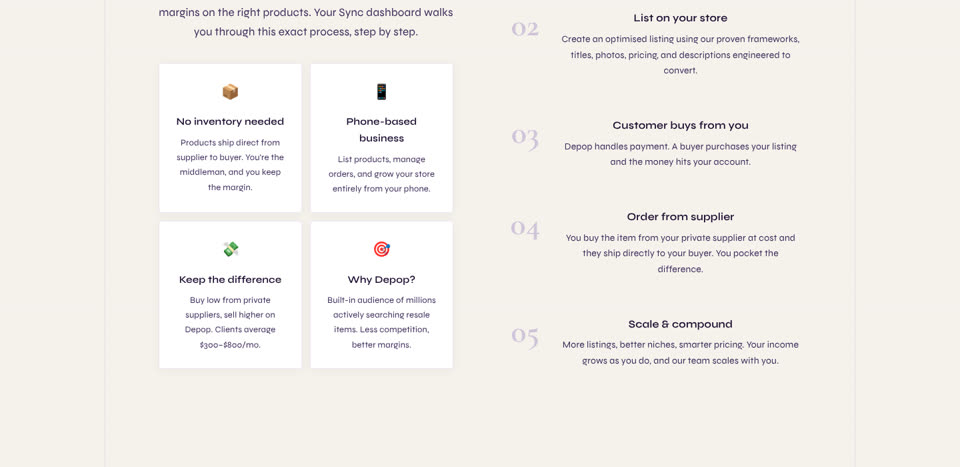
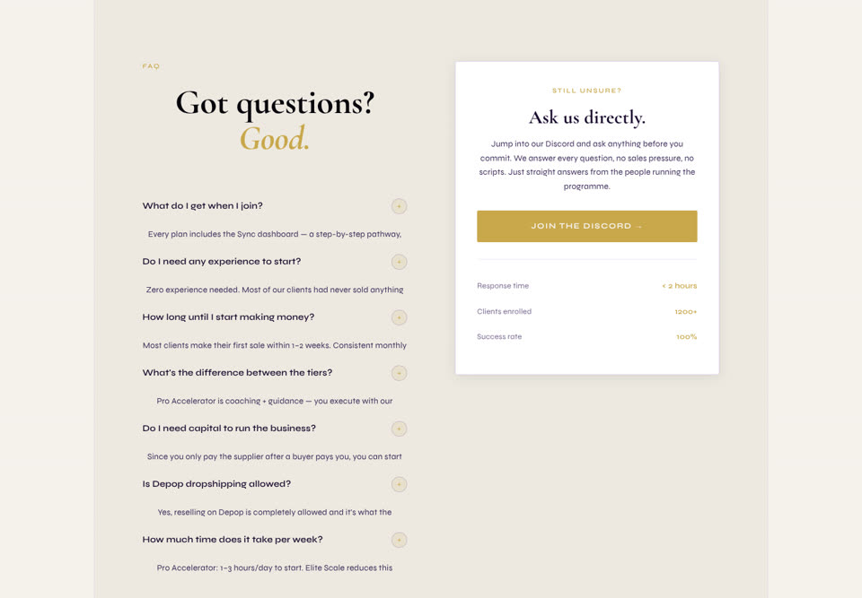
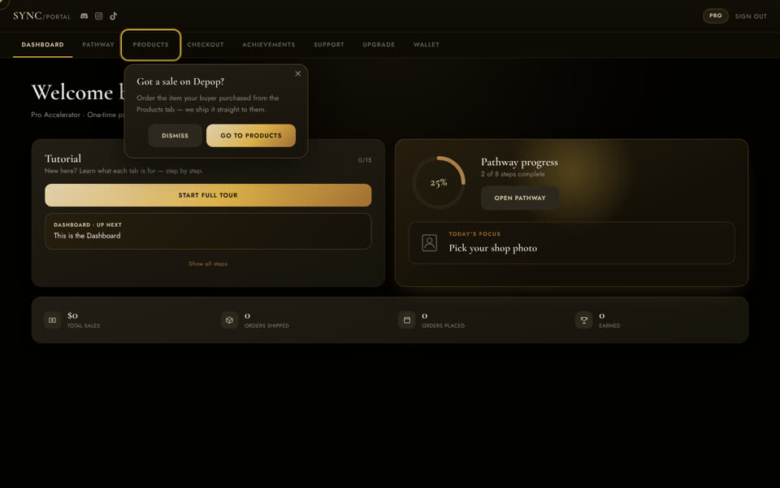
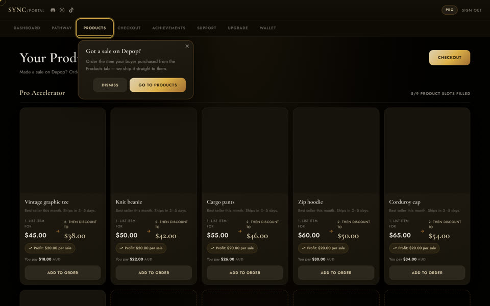
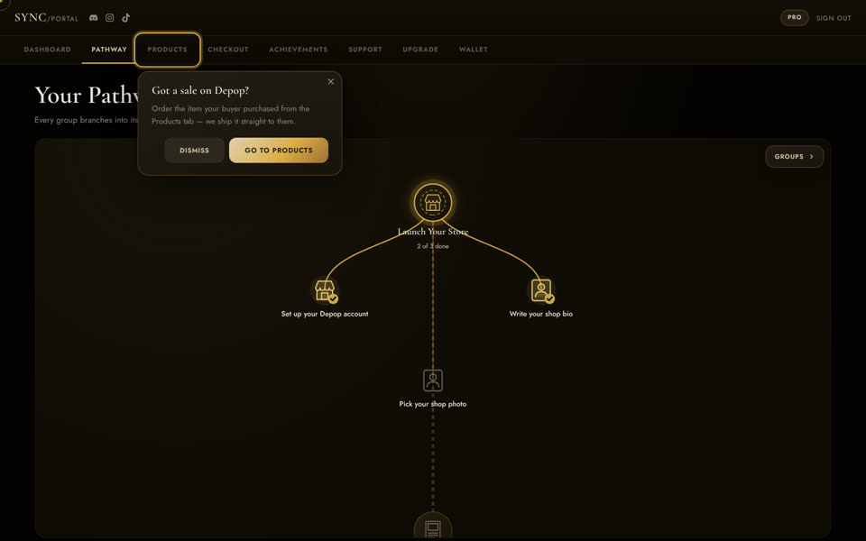
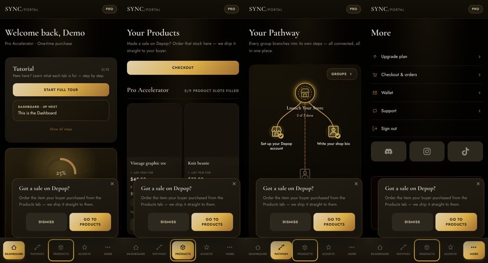

Each screenshot below is the site or portal as it renders today. Every numbered problem has a fix on the boards that follow. Anything not listed stays as it is.








Faint grey text measured 2.7–3.4:1 against its background (the standard minimum is 4.5:1). Raised to 5.3:1 or better.
The custom gold cursor hides the system cursor (bad for accessibility and trackpads). The real cursor comes back. Visible focus rings on every control.
Vite's starter stylesheet (src/index.css) is still loaded on every page. Removed. Footer year is hard-coded to 2025, so it now updates itself.